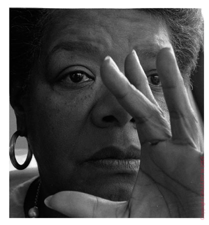

Maya Angelou
Her most famous work is a novel,
I Know Why the Caged Bird Sings
. However, Maya Angelou is today known primarily as a poet. She was the first poet since Robert Frost to recite a poem at the inauguration of a
president
.
